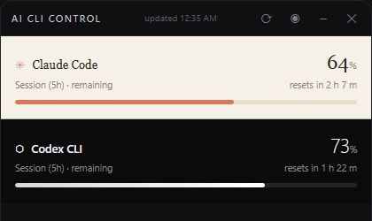
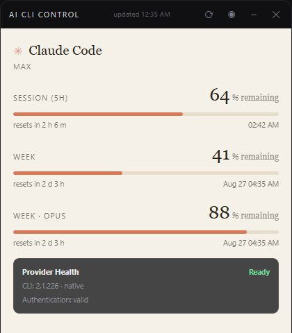
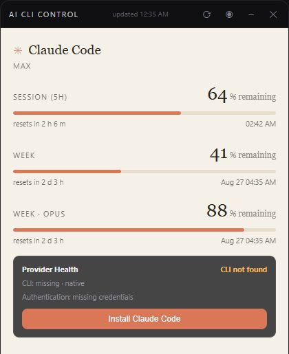
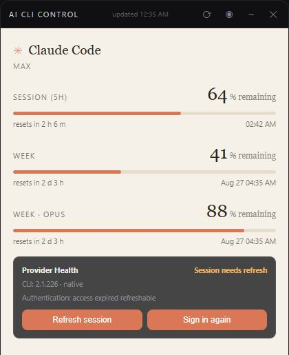

Run
Download the portable release, verify its SHA-256, and launch it.
Install, diagnose, repair, and monitor Claude Code and OpenAI Codex CLI. Provider Health tells you what Windows found, what is broken, and the safest next action.

Download the portable release, verify its SHA-256, and launch it.
Provider Health checks the CLI, version, sign-in metadata, and PATH copies.
Install, refresh a recoverable session, or open the official sign-in flow.
Keep session and weekly limits visible in the app or Windows tray.
Installation, authentication, and usage failures are separate signals. A network timeout never becomes an unnecessary login prompt.
Find native, standalone, WinGet, npm, and PATH installations; warn about conflicting copies.
Use official provider installers and CLI login commands only after an explicit action.
Classify auth, rate-limit, server, network, and format failures while preserving last-good usage.
Pinned builds, checksums, smoke tests, SBOM preparation, and provenance-ready CI.


